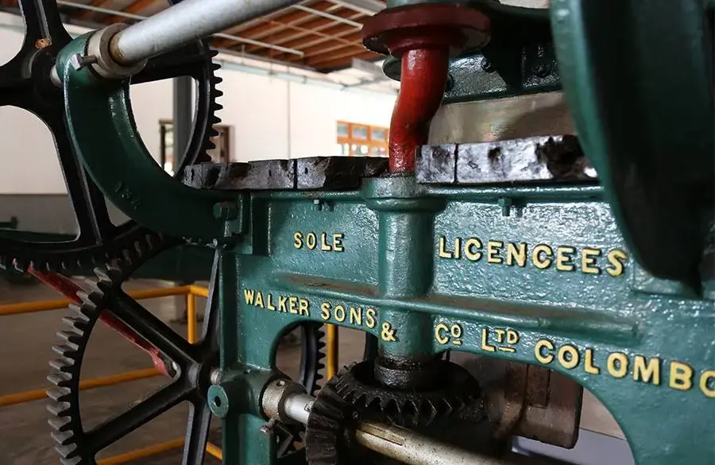

History of Ceylon Tea

Sri Lanka came to be known as a tea country by a fluke of nature when all the coffee plantations in the country were wiped out by a fungal disease. Tea was introduced to its shores from China when a tea plant was brought over to be planted at the Peradeniya Botanical Gardens. It was commercialised later in time by James Taylor, who is also known as the Father of Tea in Sri Lanka.
Taylor was a hardy Scotsman who started work on the Sri Lankan coffee plantations that pre-dated tea here, before cutting his teeth in the more established British-colonial tea fields of India. Tea was already huge business for the British with the East India Company trading first from China, then India. Following his return to Sri Lanka, Taylor almost single handily started what is now a multi-billion dollar industry and this island’s most famous export. Tea had already been cultivated on the island and run as a trial in the Botanical Gardens at Peradeniya. However, it was Taylor who started planting it on Kandy’s Loolecondera Coffee Estate in 1867.
 Starting with 200 plants, the first export to the London Tea Exchange in 1875 was just 23 pounds in weight. But by 1890 that has bloomed to 22,900 tonnes. To get grow to that point, Taylor worked with fellow countryman, the Scottish millionaire Sir Thomas ‘Tommy’ Lipton. Lipton is now a household name for tea but at the time he was an entrepreneur who ran a successful chain of grocers across Scotland. He entered the tea market with the intention of lowering prices, believing tea should be for everyone and not the preserve of high society. A chance meeting with Taylor lead to him investing heavily in Ceylon tea, contributing to its rapid expansion and global reputation.
Starting with 200 plants, the first export to the London Tea Exchange in 1875 was just 23 pounds in weight. But by 1890 that has bloomed to 22,900 tonnes. To get grow to that point, Taylor worked with fellow countryman, the Scottish millionaire Sir Thomas ‘Tommy’ Lipton. Lipton is now a household name for tea but at the time he was an entrepreneur who ran a successful chain of grocers across Scotland. He entered the tea market with the intention of lowering prices, believing tea should be for everyone and not the preserve of high society. A chance meeting with Taylor lead to him investing heavily in Ceylon tea, contributing to its rapid expansion and global reputation.